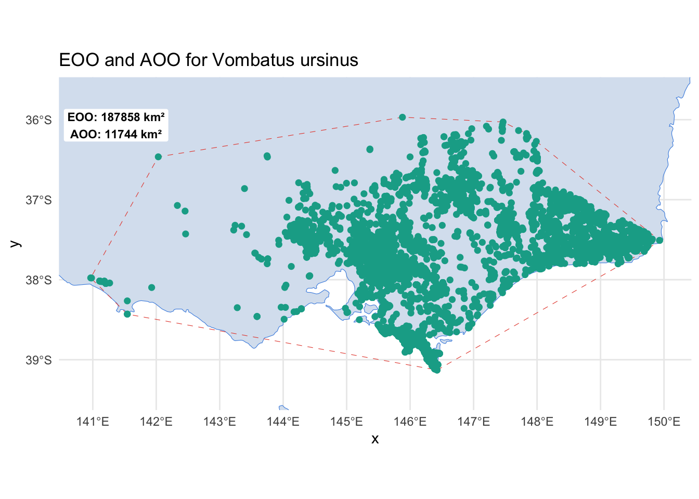

How to determine extent of occurrence (EOO) and area of occupancy (AOO) for a species
Author details: Dr Jenna Wraith
Editor details: Dr Sebastian Lopez Marcano
Contact details: support@ecocommons.org.au
Copyright statement: This script is the product of the EcoCommons platform. Please refer to the EcoCommons website for more details: https://www.ecocommons.org.au/
Date: March 2025
Script and data info:
This notebook, developed by the EcoCommons team, showcases how to determine the extent of occurrence (EOO) and area of occupancy (AOO) for a species.
Introduction
A short explanation of the notebook
This notebook calculates two important ecological metrics, the Extent of Occurrence (EOO) and the Area of Occupancy (AOO), for the common wombat: Vombatus ursinus. These metrics are commonly used to assess species conservation status by providing information on the geographic range and area occupied by the species.
Extent of occurrence (EOO)
The EOO represents the geographic spread of a species. It’s defined as the area within the smallest convex polygon that encompasses the known occurrences of the species. Ecologically, EOO is a metric for assessing the geographic range of a species and is used in conservation to estimate risk. Species with a small EOO are potentially more likely to be susceptible to extinction because their populations are more likely to be impacted by habitat changes, climate fluctuations, and human activities across their limited range.
Area of Occupancy (AOO)
The AOO is a more fine-scale measurement of where a species is actually found within its range. This metric accounts for the specific locations where the species occupies habitat within the broader EOO and is calculated using a grid-based approach, typically with cells sized to 2x2 km as per IUCN standards. Lower AOO values imply that the species is confined to smaller, often isolated patches, which could increase its vulnerability.
Set-up: R Environment and Packages
For this notebook we are going to use ConR, which includes a EOO.computing and AOO.computing functions to calculate the EOO and AOO for a species. We will also be using the Atlas of Living Australia galah package to access species occurence records.
# Set the workspace to the current working directory#setwd("") # Uncomment and replace the path below with your own working directory if needed:# setting up a workspaceworkspace <-getwd() # Get the current working directory and store it in 'workspace'# Increase the plot size by adjusting the options for plot dimensions in the notebook outputoptions(repr.plot.width =16, repr.plot.height =8) # Sets width to 16 and height to 8 for larger plots# Set CRAN mirroroptions(repos =c(CRAN ="https://cran.rstudio.com/"))# List of packages to check, install if needed, and loadpackages <-c("galah", "lwgeom", "ggplot2" , "ggspatial", "sf", "devtools","dplyr")# Function to display a cat messagecat_message <-function(pkg, message_type) {if (message_type =="installed") {cat(paste0(pkg, " has been installed successfully!\n")) } elseif (message_type =="loading") {cat(paste0(pkg, " is already installed and has been loaded!\n")) }}# Install missing packages and load themfor (pkg in packages) {if (!requireNamespace(pkg, quietly =TRUE)) {install.packages(pkg)cat_message(pkg, "installed") } else {cat_message(pkg, "loading") }library(pkg, character.only =TRUE)}
galah: version 2.1.2
ℹ Default node set to ALA (ala.org.au).
ℹ See all supported GBIF nodes with `show_all(atlases)`.
ℹ To change nodes, use e.g. `galah_config(atlas = "GBIF")`.
galah is already installed and has been loaded!
Attaching package: 'galah'
The following object is masked from 'package:stats':
filter
lwgeom is already installed and has been loaded!
Linking to liblwgeom 3.0.0beta1 r16016, GEOS 3.13.0, PROJ 9.5.1
ggplot2 is already installed and has been loaded!
ggspatial is already installed and has been loaded!
sf is already installed and has been loaded!
Linking to GEOS 3.13.0, GDAL 3.8.5, PROJ 9.5.1; sf_use_s2() is TRUE
Attaching package: 'sf'
The following objects are masked from 'package:lwgeom':
st_minimum_bounding_circle, st_perimeter
devtools is already installed and has been loaded!
Loading required package: usethis
dplyr is already installed and has been loaded!
Attaching package: 'dplyr'
The following object is masked from 'package:galah':
desc
The following objects are masked from 'package:stats':
filter, lag
The following objects are masked from 'package:base':
intersect, setdiff, setequal, union
# Install ConR from GitHub if not already installedif (!requireNamespace("ConR", quietly =TRUE)) { devtools::install_github("gdauby/ConR")cat_message("ConR", "installed")} else {cat_message("ConR", "loading")}
ConR is already installed and has been loaded!
# Load the ConR packagelibrary(ConR)
Access the data
Species of interest: Vombatus ursinus
The common wombat (Vombatus ursinus) is native to southeastern Australia and Tasmania. It is currently listed as ‘Least Concern’ on the IUCN Red List. The occurrence data for Vombatus ursinus is sourced from the Atlas of Living Australia (ALA) via the Galah Package. This dataset provides the coordinates for the species, which are used to calculate the Extent of Occurrence (EOO) and Area of Occupancy (AOO) metrics. For this example we are filtering records to include those recorded since 2015 and are located in Victoria.
# Configure the Galah settingsgalah_config(atlas ="ALA",username ="ecocommons",email ="ecocommonsaustralia@gmail.com",password =Sys.getenv("GALAH_PASSWORD"))# Choose the occurence records and apply any filters. Occurrences<-galah_call() |>identify("Vombatus ursinus") |>filter(year >=2015, cl22 =="Victoria") |>select(basisOfRecord, group ="basic") |>collect()
Request for 10949 occurrences placed in queue
Current queue length: 1
# To cite the galah package use:citation(package ="galah")
To cite galah in publications use:
Westgate M, Kellie D, Stevenson M, Newman P (2025). _galah:
Biodiversity Data from the GBIF Node Network_. R package version
2.1.2, <https://CRAN.R-project.org/package=galah>.
A BibTeX entry for LaTeX users is
@Manual{,
title = {galah: Biodiversity Data from the GBIF Node Network},
author = {Martin Westgate and Dax Kellie and Matilda Stevenson and Peggy Newman},
year = {2025},
note = {R package version 2.1.2},
url = {https://CRAN.R-project.org/package=galah},
}
Data Preparation
Load the data and convert it to an sf object
The occurrence data for Vombatus ursinus is loaded from Galah package and converted to an sf object using the st_as_sf function from the sf package. The latitude and longitude columns are specified as the coordinates for the sf object. The coordinate reference system (CRS) is set to EPSG:4326 (WGS 84) to ensure the correct spatial representation of the data.
Here we also process the data by removing records with missing coordinates, modify the data to keep only the necessary columns (latitude, longitude and species) and ensure all the species names match.
# Process the data to keep only necessary columnsMyData <- Occurrences %>%filter(!is.na(decimalLongitude) &!is.na(decimalLatitude)) %>%# Remove missing coordinatestransmute( Latitude = decimalLatitude, Longitude = decimalLongitude, Species =first(scientificName) # Unify species name )# Convert to sf objectspecies_points <-st_as_sf(MyData, coords =c("Longitude", "Latitude"), crs =4326)# Check the resultprint(species_points)
Calculate the EOO using the EOO.computing function
The EOO for Vombatus ursinus is calculated using the EOO.computing function from the ConR package. The function takes the species occurrence points as input and returns the EOO polygon and EOO value. If the EOO polygon is NULL, a convex hull is generated from the species points as an alternative representation of the EOO.
# Calculate EOO (Extent of Occurrence)EOO_polygon <-EOO.computing(MyData, export_shp =FALSE)
# Check if the spatial polygon is NULLif (is.null(EOO_polygon$spatial.polygon_1)) {# Create the convex hull from the species points eoo_hull <-st_convex_hull(st_union(st_geometry(species_points)))# Save the convex hull as an sf object EOO_sf <-st_sf(geometry = eoo_hull)} else {# Convert the existing polygon to an sf object if available EOO_sf <-st_as_sf(EOO_polygon$spatial.polygon_1)}
Calculate Area of Occupancy (AOO)
Calculate the AOO using the AOO.computing function
The AOO for Vombatus ursinus is calculated using the AOO.computing function from the ConR package. The function takes the species occurrence points as input and returns the AOO value based on a 2x2 km grid. The AOO value represents the area actually occupied by the species within the grid cells.
Visualise the EOO, AOO, and species occurrence points
Now, to conclude this short notebook, we will visualise the calculated EOO, AOO, and the species occurrence points on a map using ggplot2. The map will display the land area, species points, EOO polygon (or convex hull), and include annotations for the EOO and AOO values. The map will provide a visual representation of the species distribution and the extent of its occurrence.
# Extract the EOO and AOO valuesprint(paste("The EOO value is:", EOO_polygon$eoo, "km²"))
[1] "The EOO value is: 187858 km²"
print(paste("The AOO value is:", AOO_result$aoo, "km²"))
[1] "The AOO value is: 11744 km²"
# Get bounding box for the species pointsbbox <-st_bbox(species_points)# Create the ggplot with the template coloursggplot() +# Plot the land layergeom_sf(data = land, fill ="#D9E3F0", color ="#4A90E2") +# Plot the EOO convex hullgeom_sf(data = EOO_sf, fill =NA, color ="#E74C3C", linetype ="dashed", size =3) +# Plot the species pointsgeom_sf(data = species_points, color ="#11AA96", size =2, shape =16) +# Set coordinate limits based on the bounding boxcoord_sf(xlim =c(bbox["xmin"] -0.5, bbox["xmax"] +0.5), ylim =c(bbox["ymin"] -0.5, bbox["ymax"] +0.5), expand =FALSE) +# Add EOO and AOO values as an annotation boxannotate("label", x = bbox["xmin"] +0.4, y = bbox["ymax"] -0.1, label =paste("EOO:", round(EOO_polygon$eoo, 2), "km²\nAOO:", round(AOO_result$aoo, 2), "km²"), size =3, fill ="white", color ="black", fontface ="bold", label.size =0) +# Removes the border around the label# Set gridlines at 2 km intervalsscale_x_continuous(breaks =seq(floor(bbox["xmin"]), ceiling(bbox["xmax"]), by =1)) +scale_y_continuous(breaks =seq(floor(bbox["ymin"]), ceiling(bbox["ymax"]), by =1)) +# Customize the themetheme_minimal() +labs(title ="EOO and AOO for Vombatus ursinus") +theme(legend.position ="none")

Conclusion
In this notebook, we have demonstrated how to calculate the Extent of Occurrence (EOO) and Area of Occupancy (AOO) for the common wombat (Vombatus ursinus). This serves as a starting point for understanding a species’ distribution and provides a first glance at its potential extinction risk. While EOO and AOO are valuable, they are just the beginning of a more comprehensive assessment of a species’ conservation status. These metrics can guide further research and inform more detailed analyses, ultimately contributing to better-informed conservation strategies.
How to Cite EcoCommons
If you use EcoCommons in your research, please cite the platform as follows:
Dauby, G., Stévart, T., Droissart, V., Cosiaux, A., Deblauwe, V., Simo‐Droissart, M., Sosef, M.S., Lowry, P.P., Schatz, G.E., Gereau, R.E. and Couvreur, T.L., 2017. ConR: An R package to assist large‐scale multispecies preliminary conservation assessments using distribution data. Ecology and evolution, 7(24), pp.11292-11303.
Gaston, K.J. and Fuller, R.A., 2009. The sizes of species’ geographic ranges. Journal of applied ecology, 46(1), pp.1-9.
Marsh, C.J., Syfert, M.M., Aletrari, E., Gavish, Y., Kunin, W.E. and Brummitt, N., 2023. The effect of sampling effort and methodology on range size estimates of poorly-recorded species for IUCN Red List assessments. Biodiversity and Conservation, 32(3), pp.1105-1123.
Rivers, M.C., Taylor, L., Brummitt, N.A., Meagher, T.R., Roberts, D.L. and Lughadha, E.N., 2011. How many herbarium specimens are needed to detect threatened species?. Biological conservation, 144(10), pp.2541-2547.
Westgate, M., Kellie, D., Stevenson, M., Newman, P., 2025. galah: Biodiversity Data from the GBIF Node Network. R package version 2.1.1, https://CRAN.R-project.org/package=galah.
footer
EcoCommons received investment (https://doi.org/10.3565/chbq-mr75) from the Australian Research Data Commons (ARDC). The ARDC is enabled by the National Collaborative Research Infrastructure Strategy (NCRIS).
Our Partner
How to Cite EcoCommons
If you use EcoCommons in your research, please cite the platform as follows: